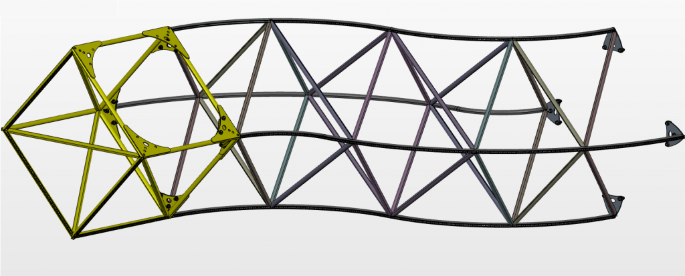

Last night, the Penrose Triangle was installed on the Boston Common as part of the city of Boston's First Night New Years celebration. After it's round trip from the desert, it definitely needed a lot of work to get it to the point where it was ready to be displayed to the public. The paint had to be touched up to fix damage caused by climbing participants and general wear and tear associated with it's shipment. Some wiring and lighting had to be repaired and/or redone. Additional measures had to be taken to enable the triangle to seal and protect the electrical systems so that it could sustain display in the unforgiving Boston winter. Surly Blake spearheaded efforts to get it prepared and by last night, all systems were go.
In order to minimize work done on-site, Surly hauled the triangle to the Common in four parts. The triangle itself was carried in three cube (highlighted here in yellow) and arm assemblies. Additionally, the base was carried partially assembled in one large chunk.

Earlier in the day, John Dill and Jaykob Fenwyck helped get the first two arm/cube assemblies and part of the base in place on the Common. Later on in the evening, it was Hooch and my turn to help transport parts and complete the assembly. One last arm/cube gets loaded on to the back of the trailer.
A quick stop on our way out of Somerville for some fuel and a few stares and we are on the way.
Apropos of nothing, Surly really knows his way around the Boston area. He managed to get us to and from the site quickly and smoothly.
After arriving on site and getting the keys for the forklift from our First Night contact, the first step was to take the arm/cube that was sitting on the ground and get it hoisted into position.
It was a bit tricky, but we made do without incident. Hooch and I were able to manipulate the second arm/cube and bolt it on to the first arm/cube that was already assembled on the base. Surly handled fork lift duty.
I encountered my own set of challenges as I was the most apt/willing to climb the structure under on site. Safely secured in the shop ooooooorrr soaking wet in the driving freezing rain, what's the difference, eh? I elected to go up. Here I am removing the strap from the fork lift after we'd fastened the second arm/cube into place.
We gave up even trying to stay dry early in the process as we trudged through the inches deep rain and mud that pooled around the area of the park where we were working. I don't think I've been out in that heavy of a downpour in a very long time, let alone spending extended periods of walking and working under those conditions. Next step, tightening and finishing the base assembly.
AND IT'S UP!! Well, almost. Getting the third arm/cube assembly in place was a harrowing experience. Hooch stayed at the bottom securing the arm by a few bolts, Surly operated the fork lift and I stayed at the top of the one assembled arm wrestling the entire third arm as it was lowered into place. The fork lift is not forgiving and after a brief scary dance with that last arm and gravity, I placed all the last bolts securing the arm.
Tightening bolts, trying to keep a steady stance on the wet pipe while getting good leverage.
SUCCESS! Those are two pretty happy Blakes right there.
Surly hooked up the power and after some tense moments with an entire arm not lighting up, the last arm came to life. The work is far from over. There are still a few snags so another visit by the electric team is in order. For now, things are in good shape.
So. Much. Rain. Did I mention, it was 35°?
I'll never get tired of observing this thing from all angles. There is an added joy being able to see the triangle assembled in the city.
So, so cold.. We're ready to go home.
So there you have it, The Penrose Triangle now sits on the Boston Common in preparation for a city of revelers.
It takes a lot of people to get this project going. Engineering, fabrication, electrical and programming teams. We're all incredibly excited to share this project fully assembled for a home town crowd. I've learned a lot in all those disciplines while being involved in this project and I take a lot of pride in my role in the media department as well as doing my part in some of the final stretch grunt work that it's taken to get see the team's vision fulfilled. Please come to the Common between now and New Years Day to see our crazy project on display
blinking away in the City of Boston!!!
{kind=link}
{kind=link}


{kind=link}


{kind=link}

{kind=link}